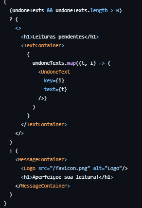

Tela do Estudante
Ao acessar a página, o sistema realiza automaticamente uma consulta para verificar se o usuário possui leituras pendentes, ou seja, textos que ainda não foram concluídos. Essa verificação é importante para manter o usuário informado sobre o seu progresso e as atividades que ainda precisam ser realizadas. Caso existam textos não finalizados, eles são listados de forma organizada, facilitando a visualização e o acesso direto a cada um desses conteúdos. Isso ajuda o usuário a retomar exatamente de onde parou, promovendo um fluxo contínuo de aprendizado e engajamento.
Por outro lado, se não houver nenhuma leitura pendente, o sistema exibe uma mensagem de incentivo, motivando o usuário a continuar aperfeiçoando suas habilidades de leitura. Essa mensagem atua como um reforço positivo, criando uma sensação de conquista e progresso, o que pode aumentar a motivação para buscar novos desafios e manter uma rotina de estudos ativa. Dessa forma, a interface se adapta ao estado do usuário, oferecendo uma experiência personalizada e encorajadora, que contribui para um desenvolvimento constante e autônomo.
Exemplo do código
Esse trecho verifica se há textos pendentes, ou seja, se a lista undoneTexts existe e tem itens. Caso positivo, exibe um título e a lista dos textos, utilizando um componente para cada item. Se a lista estiver vazia, exibe uma mensagem motivacional com uma logo, incentivando o usuário a melhorar a leitura.
Essa lógica é fundamental para criar uma experiência dinâmica, onde a interface se adapta de acordo com os dados disponíveis, mostrando informações úteis ou uma mensagem alternativa.
